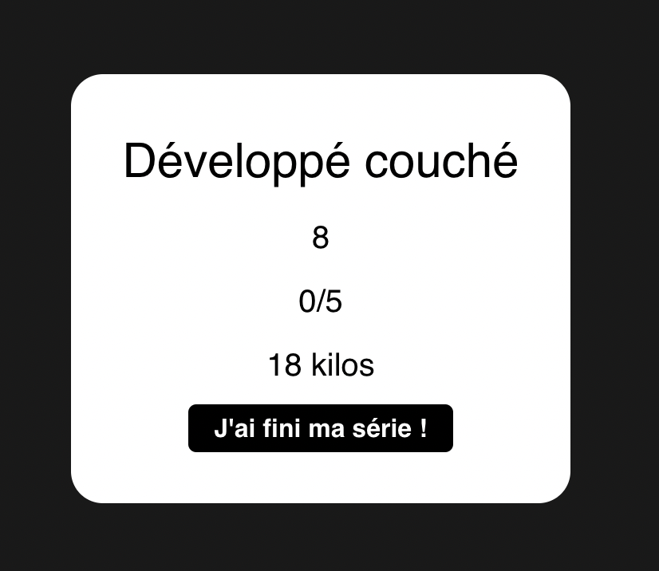
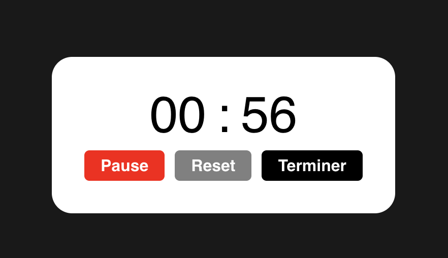
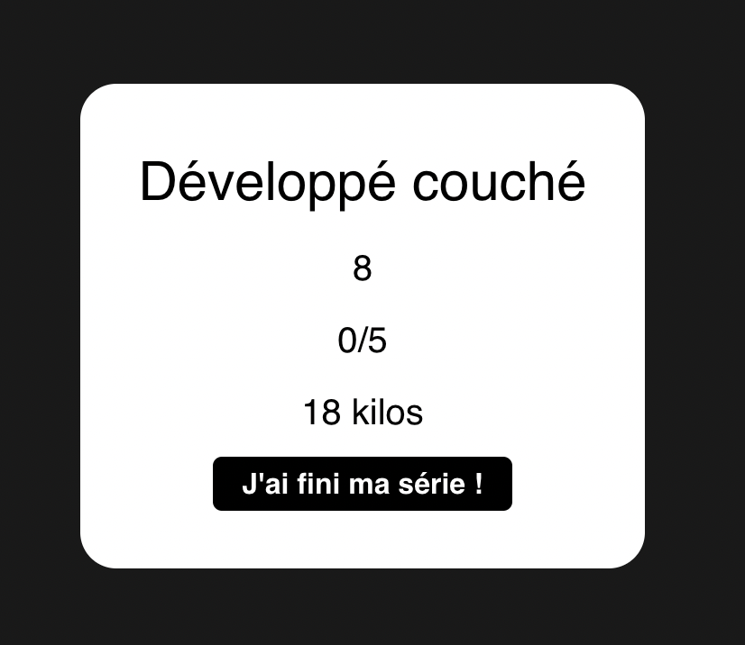
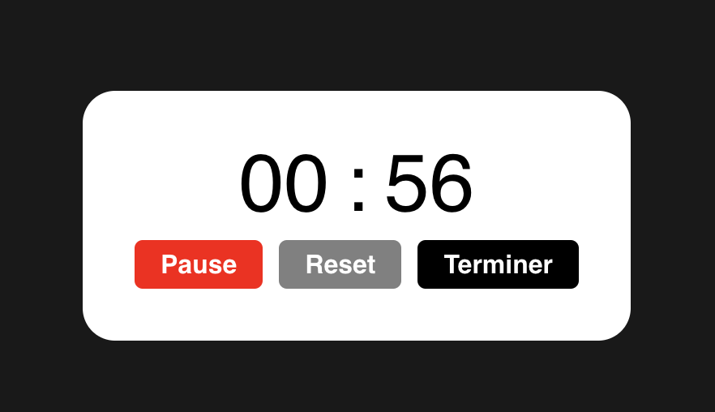
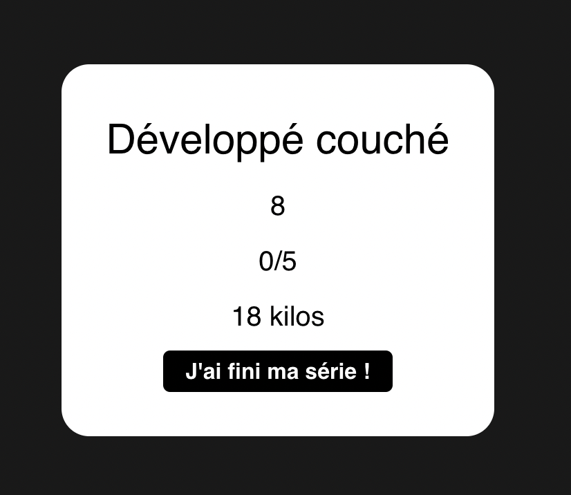
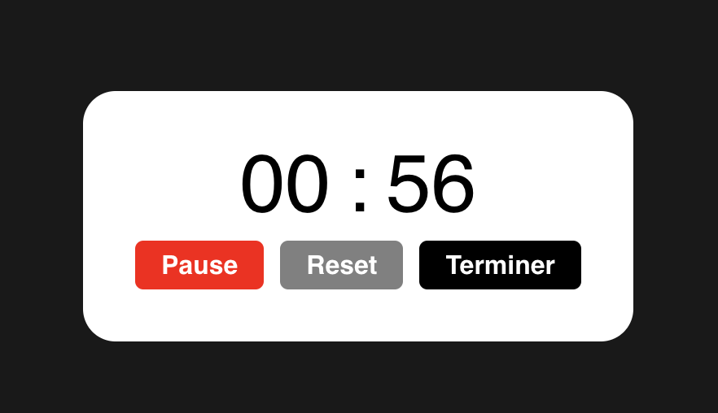

On peut par la suite lancer sa séance du jour :
 



C'est principalement une application permettant de construire ses séances sportives et d’être assisté durant celles-ci.
... Mais comment ça marche concrètement ?
Une fois que tu as inscrit tes séances de la semaine, tu lances ta séance du jour et tu récupères toutes ses informations.
Dès que tu as fini ta série ou ton exercice, un chronomètre déjà préparé au temps de repos indiqué se lance.
... Et pas que !
- Visualiser ta progression au fil des semaines.
- Obtenir un programme personnalisé en fonction d'un algorithme basé sur tes objectifs !
- Être suivi par des médecins et des coachs.
Plus sérieusement, je vous présente ma homepage :
Une fois inscrit et connecté, on peut créer ses séances de la semaine :
On peut par la suite lancer sa séance du jour :


↑
↓